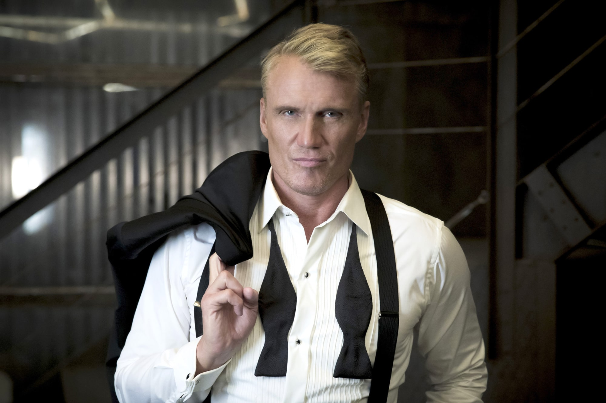

Swedish actor, filmmaker and martial artist.
I try to keep the martial arts up. It's a good thing,
not just physically but also for your mind.
Dolph Lundgren was born as Hans Lundgren in Stockholm, Sweden, to Sigrid Birgitta (Tjerneld), a language teacher, and Karl Johan Hugo Lundgren, an engineer and economist for the Swedish government. He lived in Stockholm until the age of 13, when he moved in with his grandparents in Nyland, Ångermanland, Sweden. Despite an early interest in music and the fine arts, Dolph decided to follow in his father's footsteps and pursue an Engineering degree. After having completed his military service, he enrolled at the Royal Institute of Technology in Stockholm.
It was in the military when Dolph first came in contact with the martial arts. Five years later, he had become a world-class competitor in Japanese Karate and was deeply involved with a discipline that was to become an important part of his life. After graduating High School, Dolph spent considerable time studying in the United States and abroad on various academic scholarships. He attended Washington State University and Clemson University in South Carolina. In 1982, he received a scholarship to complete his Masters Degree in Chemical Engineering at the University of Sydney, Australia. In 1983, he was awarded a Fulbright scholarship to the Massachusetts Institute of Technology in Boston, one of the world's top engineering schools.
Lundgren managed to not let his Hollywood career stand in the way of his athletic background. He has been awarded his Third Degree Black Belt by the World Karate Organization in Tokyo. His accomplishments include being the Captain of the Swedish National Karate Team, as well as a Champion of the Swedish, European and Australian Heavyweight Division titles. Lundgren still regularly performs Karate exhibitions at international tournaments worldwide. In addition, he was selected by the U.S. Olympic Committee to serve as Team Leader of the 1996 U.S. Olympic Pentathlon Team during the Atlanta Games. He is actively involved in promoting the image of this sport. His production company, Thor Pictures, is developing several projects in which he will produce, star and/or direct. He is also a founding member of "Group of Eight", a New York theater group started in 1994.
undgren has reportedly been working on a fitness book and sports wear line for men, the creation and launch of a new eponymous brand, a licensing, media and publishing program, and the development of future entertainment and media projects. Lundgren was married to Anette Qviberg-Lundgren, an interior decorator and fashion designer, until their divorce in 2011. They had two daughters together.